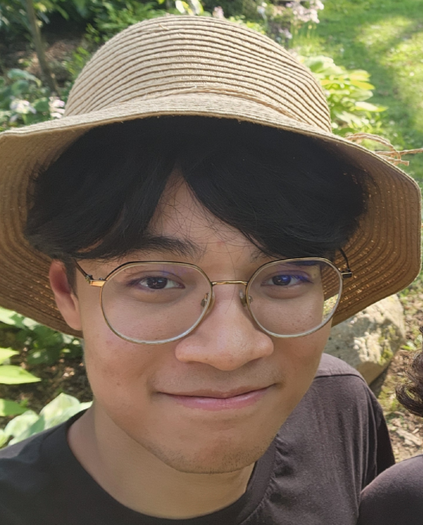

Hi! I'm currently applying to PhD programs with a focus in theoretical computer science (expecting to start in September 2025). I did my undergraduate (finishing in May 2024) at Rutgers University, where I majored in math and computer science. I wrote an undergraduate thesis under the supervision of Karthik C. S., summarizing the research into clustering problems we did together.
Feel free to email me at [firstname].[lastname]@rutgers.edu
I'm broadly interested in theoretical computer science, and more specifically in complexity theory. I enjoy problems that use interesting math (particularly, nice algebraic or analytic) techniques.
Even more specifically, I've recently been working (and have worked) on problems in approximation algorithms, algebraic complexity, and fine-grained complexity. I'm generally interested in the complexity of algebraic or geometric problems, but I'd also like to explore more subtopics in TCS during my PhD.
On connections between \(k\)-coloring and Euclidean \(k\)-means
EA, Karthik C. S., Sharath Punna
ESA 2024 [dagsthul] [arxiv]
In Summer 2024, I participated in the DIMACS Tutorial on Fine-grained Complexity where various modern fine-grained results were discussed, including standard fine-grained reductions showing 3SUM-hardness, All-Pairs Shortest-Paths, and SETH results.
In Summer 2022, I was a participant in the DIMACS REU program. I studied the Markoff surface and the strong approximation conjecture under the guidance of Alex Kontorovich. Here is a link to my research log during that time.
Outside of academic things, I enjoy taking pictures of stuff, eating food, and playing rhythm games. Click here for more details!